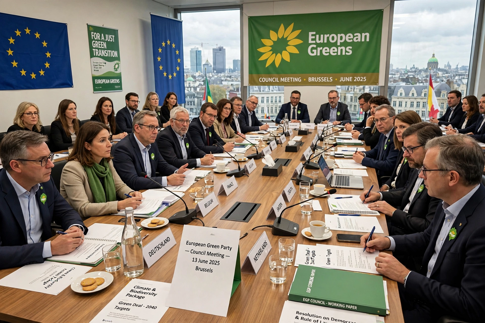

| European Green Party | |
|---|---|
| Founded | 21 February 2004, Rome, Italy |
| Predecessor | European Federation of Green Parties (1993) |
| Headquarters | Brussels, Belgium |
| Ideology | Green politics, pro-Europeanism |
| Parliament group | Greens/European Free Alliance |
| International | Global Greens |
The European Green Party (EGP) is a transnational political party of green parties in Europe. Founded in Rome on 21 February 2004, it succeeded the European Federation of Green Parties and was the first party organized at the European level to hold founding congress as a genuinely European party rather than a federation.
The EGP brings together green parties from across the European Union and beyond, including Alliance 90/The Greens in Germany, Europe Écologie Les Verts in France, GroenLinks (and its successor alliance) in the Netherlands, and green parties in Austria, Belgium, the Nordic countries, and elsewhere. Full member parties must endorse the party's charter; associate and observer statuses exist for parties in candidate and neighboring countries. The party is led by two co-chairs, by convention of different genders and countries, and its highest body is a council of delegates from member parties.
EGP member parties sit in the Greens/European Free Alliance group in the European Parliament, together with regionalist and pirate parties. The group grew steadily from the 1999 elections and peaked after the 2019 "green wave" elections, in which climate protests and concern over environmental issues lifted green parties across the continent. In 2024 the Greens/EFA group retained a significant presence though with reduced numbers.
The party campaigns for ambitious climate action, including the European Green Deal, a just transition for workers in carbon-intensive industries, protection of biodiversity, defense of the rule of law and fundamental rights within the EU, and a more democratic and federal Europe.
See also: Green politics, European political party